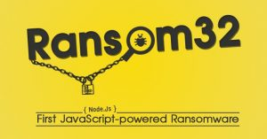
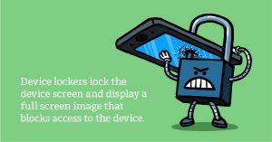

Jenis Serangan Virus Ransomware
By Awaludin Siking
Pada kesempatan kali ini, kita coba bahas jenis- jenis serangan virus Ransomware. Virus ini banyak tersebar di internet, Sebaiknya kita mengatahui cara virus ini bekerja. Agar komputer atau gadget kita tidak mudah terjangkit virus ransomware.Baca juga : Pengertian dan Jenis Malware Ransomware.
Single Platform
Ransomware yang dibuat untuk menyerang satu jenis platform, seperti Windows misalnya.
Cross Platform

Yaitu ransomware yang memiliki kemampuan menyerang berbagai macam platform seperti Ransom32, Shark dan Zimbra yang mampu menginfeksi Windows, Mac OS dan Linux sekaligus.
Sistem Server
Pengembang malware menciptakan ransomware yang hanya menyerang sistem server, tujuan tentu saja menguasai jaringan komputer, sehingga sasaran yang didapat bisa dalam jumlah besar.
Situs E-Commerce
Beberapa waktu lalu sempat muncul ransomware yang mengincar Situs-situs E-Commerce, maraknya situs-situs belanja online di dunia menjadi alasan di balik hadirnya ransomware ini.
RaaS
Raas atau Ransomware as a Service, adalah metode penyerangan ransomware paling berbahaya diantara yang lainnya. Pengembang malware menjadikan ransomware sebagai franchise yang bisa digunakan oleh siapa saja, dirancang untuk mudah digunakan bahkan oleh newbie sekalipun, dengan sistem bagi hasil sangat menguntungkan bagi mereka yang mau mengoperasikan.
Android
Dengan semakin meningkatnya pengguna smartphone di seluruh dunia, tren penyimpanan data pun mengalami pergeseran, mereka yang biasa menyimpan data di dalam komputer ataupun removable media, sekarang beralih menyimpan data-data penting mereka ke dalam ponsel. Pergeseran tren ini menjadi penyebab munculnya ransomware android.

Semua jenis serangan virus ransomware bertujuan untuk memperoleh keuntungan dari para korban. semoga kita lebih waspada dan lebih perhatian terhadap keamanan data- data yang kita miliki. Agar kita tidak mudah terjangkit virus ransomware.
Sekian, terima kasih….

 Perbedaan Jaringan 3G dan 4G
Perbedaan Jaringan 3G dan 4G
 Jumlah Core dan Hubungannya dengan
Jumlah Core dan Hubungannya dengan Pengertian Subnetting IP Address
Pengertian Subnetting IP Address  Cara Mengatur Layar di Windows Saat
Cara Mengatur Layar di Windows Saat Pengertian dan Cara Defrag/Defragment
Pengertian dan Cara Defrag/Defragment  Macam macam file audio dan
Macam macam file audio dan  Apa itu Extreme Programming ?
Apa itu Extreme Programming ?